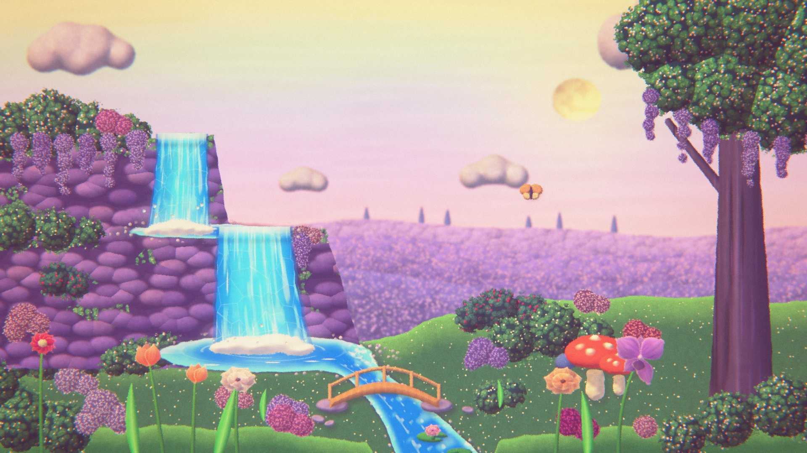

Stop-motion wallpapers, handmade in your browser
Build a scene in layers out of paper, felt, clay and foliage. It loops every six seconds on a stop-motion beat, and you can take it with you as a wallpaper, a video or a live background.
Lilac Falls, this scene: procedural art written by Claude, after the feel of a stop-motion backdrop by Tamara.
How a scene is made
The same recipe behind the scene above, as a tool.
-
Layers at real depths
Every layer stands at a depth, like the flats of a multiplane camera. Near layers drift further than far ones, so the scene breathes.
-
Handmade materials
Shapes are cut from paper, felt, clay, cardboard or clumped foliage, with rough edges, fiber fuzz and one warm light from the top left.
-
Animated pose by pose
Pieces move between poses on a stepped beat, the way stop motion is shot. 3D pieces are sculpted from clay parts and can turn, bounce or wobble.
-
Loops without a seam
Export a still, a video that loops exactly, or a live wallpaper: one file that plays the scene full screen.
Start from a scene
Every piece of these opens in the editor, ready to move, recolor or delete.